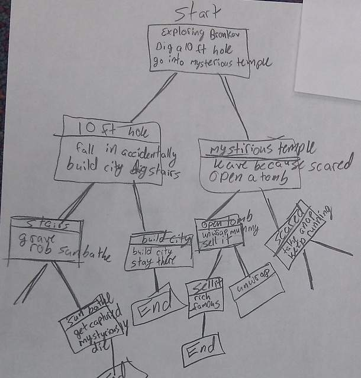
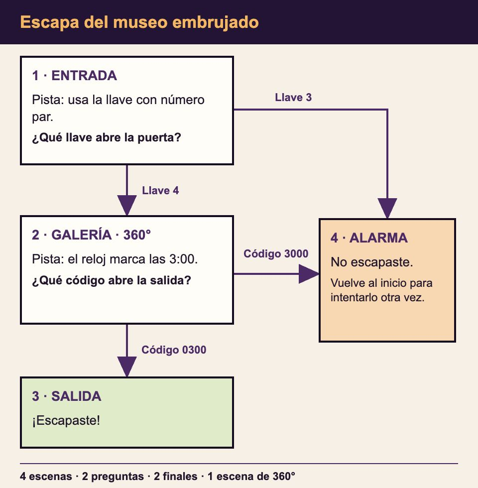

HALLOWEEN · ESCAPE ROOM
Plan your Halloween escape room
Draw the clues, choices, and endings before you build.

Your Halloween escape room:
- 4+ story scenes, including a start and two endings: escape / do not escape.
- 2+ decision points with questions or puzzles. Each answer leads to a consequence.
- 1 scene in 360° that is part of the route.
Branching blocks connect the scenes; they do not count as extra story scenes.
Photo: Zdeněk Macháček / Unsplash
Explore a finished escape room
Find a clue. Notice how it helps answer a question.
1. Plan the escape
Choose a setting: haunted museum, mysterious library, pumpkin laboratory, or your own Halloween setting. Decide what the player must do to escape.
- Draw a box for each scene. Write what the player sees and the clue they can use.
- Write the questions and answer choices. Mark the correct answer. Draw an arrow for each answer and show where it leads.
- Label both endings and the 360° scene. Trace every route with your finger.
2. See an escape-room plan

Another example: a hand-drawn story map

3. Submit your plan
- Upload a clear photo or screenshot of your complete map.
- In a Canvas comment: Which choice changes the experience most, and why?
- Wait for teacher approval before building. While waiting, improve clues or gather images.
Sentence stem: If the player chooses ___, then ___ because ___.
Word bank: clue = information that helps · choice = a decision · scene = part of the story · ending = how it finishes.
HALLOWEEN · ESCAPE ROOM
Planea tu escape room de Halloween
Dibuja las pistas, decisiones y finales antes de construir.
Tu escape room de Halloween:
- 4+ escenas, con un inicio y dos finales: escapar / no escapar.
- 2+ decisiones con preguntas o acertijos. Cada respuesta lleva a una consecuencia.
- 1 escena de 360° que forme parte del recorrido.
Los bloques Branching conectan las escenas; no cuentan como escenas extra.
Explora un escape room terminado
Abrir escape room en otra pestaña
Busca una pista. Mira cómo ayuda a responder una pregunta. El ejemplo está en inglés.
1. Planea cómo escapar
Elige un lugar: museo embrujado, biblioteca misteriosa, laboratorio de calabazas o tu propia idea de Halloween. Decide qué debe hacer el jugador para escapar.
- Dibuja un cuadro para cada escena. Escribe qué ve el jugador y qué pista puede usar.
- Escribe las preguntas y sus respuestas. Marca la respuesta correcta. Dibuja una flecha por respuesta y muestra a dónde lleva.
- Marca los dos finales y la escena de 360°. Recorre todos los caminos con el dedo.
2. Mira un plan de escape room

Otro ejemplo: mapa dibujado a mano
3. Entrega tu plan
- Sube una foto o captura clara de tu mapa completo.
- En un comentario de Canvas: ¿Qué decisión cambia más la experiencia y por qué?
- Espera la aprobación del maestro antes de construir. Mientras esperas, mejora pistas o reúne imágenes.
Frase de apoyo: Si el jugador elige ___, entonces ___ porque ___.
Banco de palabras: clue = pista · choice = decisión · scene = escena · ending = final.